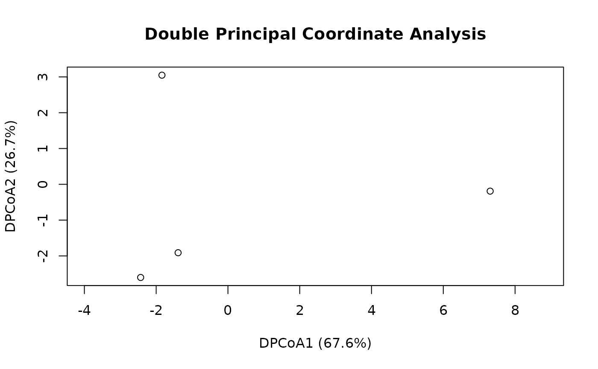

Ordinates samples and taxa in one space, using the phylogeny (or any
Euclidean dissimilarity) among the taxa: DPCoA (Pavoine, Dufour & Chessel
2004). The taxa are placed by a principal coordinate analysis of their
dissimilarities, each sample sits at the abundance-weighted centre of its
taxa, and the axes are the samples' principal axes. Distances between
samples are those of Rao's quadratic entropy, a phylogenetic diversity.
This is ade4's dpcoa() and phyloseq's ordinate(method = "DPCoA").
Usage
dpcoa(
counts,
tree = NULL,
taxa_dm = NULL,
margin = 1L,
n_axes = 3L,
cpus = n_cpus()
)Arguments
- counts
A numeric matrix of non-negative abundances (samples \(\times\) taxa, see
margin), or any of the other objects listed in "Input Types". Values need not be integers. Every sample must have a positive total. The taxa must have names, to match them to the tips oftreeor the labels oftaxa_dm.- tree
A
phyloobject with branch lengths, whose tips include every taxon ofcounts(seeread_tree()). Tips that aren't taxa ofcountsare dropped. Can be omitted if a tree is embedded with thecountsobject or asattr(counts, 'tree'). The taxa dissimilarities are the square roots of the distances along the tree (patristic distances), which are always Euclidean.- taxa_dm
Instead of
tree: the dissimilarities among the taxa, as adistobject or symmetric matrix, used as given. They must be Euclidean (for instance, the square roots of patristic distances, or Euclidean distances between trait values). Labels are matched to the taxa ofcounts, and taxa not incountsare dropped; without labels, rows are taken in the order ofcounts' taxa. An embedded tree is ignored whentaxa_dmis given.- margin
The margin containing samples.
1if samples are rows,2if samples are columns. Ignored whencountsis a special object class (e.g.phyloseq). Default:1- n_axes
The number of axes to return. Default:
3- cpus
How many parallel processing threads should be used. The default,
n_cpus(), will use all logical CPU cores.
Value
A numeric matrix with one row per sample and one column per axis,
named "DPCoA1", "DPCoA2", etc., of class "ecodive_ord" (see
"Ordination result" below), with attributes:
method:"dpcoa".eig: The eigenvalues: each axis's weighted variance of the samples, as ade4'seig.prop: Each axis's share of the total inertia,trace.taxa: The taxa coordinates on the same axes (taxa \(\times\) axes, ade4'sdls), named by taxon. A taxon absent from every sample doesn't shape the axes (its weight is 0), but is placed on them too.rao: Each sample's Rao quadratic entropy (ade4'sRaoDiv), named by sample.trace: The total inertia: the weighted sum of the samples' squared distances from their centre. It is the among-sample part of Rao's apportionment of diversity: the Rao entropy of all samples pooled, less the weighted mean ofrao.
Details
Method
With \(n_i\) the total of sample \(i\), the samples have weights \(w_i = n_i / \sum n\) and relative abundances \(p_{ik}\), and the taxa have weights \(\bar{p}_k = \sum_i w_i p_{ik}\), their shares of the grand total. With \(\delta_{kl}\) the dissimilarity between taxa \(k\) and \(l\):
The taxa are placed at points \(x_k\) with \(|x_k - x_l| = \delta_{kl}\), centred on their \(\bar{p}\)-weighted mean: a PCoA of \(\delta\) weighted by \(\bar{p}\), with every axis kept.
Sample \(i\) is placed at \(y_i = \sum_k p_{ik} x_k\).
The axes are the principal axes of the \(y_i\), weighted by \(w\): the eigenvectors of \(\sum_i w_i y_i y_i'\), whose eigenvalues are
eig. The samples' coordinates are their \(y_i\), and the taxa's their \(x_k\), projected on the axes.
Rao's quadratic entropy of sample \(i\) is \(\frac{1}{2} \sum_{k,l} p_{ik} p_{il} \delta_{kl}^2\), and the squared distance between samples \(i\) and \(j\) (over all axes) is \(\sum_{k,l} p_{ik} p_{jl} \delta_{kl}^2 - \mathrm{rao}_i - \mathrm{rao}_j\).
With a tree, \(\delta_{kl}^2\) is the length of the path between tips \(k\) and \(l\). So Rao's entropy is half the expected path length between two reads drawn at random from the sample, and is computed over the branches: for a branch of length \(L\) with a share \(a\) of the sample below it, \(L a (1 - a)\), summed over the branches. Polytomies, the root's position and nodes with one child don't change path lengths, so the tree may be unrooted or not binary.
dpcoa() can also be run as count_ord(counts, 'dpcoa', tree = tree).
Speed and memory
No taxa \(\times\) taxa matrix is formed, and with a tree, nor are the
taxa's points: block Lanczos finds the top n_axes eigenpairs of the
samples' (weighted) inner products from products computed from the
sparse table. With a tree, each product takes time proportional to the
table's non-zero values plus the tree's size, from sums up and down the
tree. With taxa_dm, each product passes over the packed distances, and
they are first checked to be Euclidean in the same way (their smallest
PCoA eigenvalue may not fall below \(-\sqrt{\epsilon}\) times their
trace). Results are identical from run to run and for any number of
cpus.
Differences from ade4
The sample and taxa coordinates, eigenvalues and Rao entropies agree with
ade4 1.7-24's dpcoa(df, dis) (with dis the square roots of the
patristic distances, for a tree) to about \(10^{-12}\), up to each
axis's sign. Differences:
ade4 stops with an error when a taxon is absent from every sample;
dpcoa()keeps it, with weight 0 (the results for the other taxa are ade4's without it), and gives its coordinates too.Axes with eigenvalues at rounding-error level, below
sqrt(.Machine$double.eps)times the first, are dropped with a warning.n_axesis reduced to at most one less than the number of samples, or of taxa.ade4's taxa scores on its taxa PCoA axes (
c1), its dissimilarities between samples (RaoDis) and its diversity table (RaoDecodiv) are not returned;traceis the table's between-samples diversity, and the within-samples diversity isweighted.mean(rao, w).phyloseq's DPCoA applies a Cailliez correction to the distances when
ade4::is.euclid()finds them non-Euclidean. The square roots of patristic distances are always Euclidean, so that only happens through rounding error;dpcoa()never corrects them.
Same names in other packages
ade4::dpcoa() shares its name with dpcoa(); whichever package was
attached last masks the other's. Write ecodive::dpcoa(), or use
count_ord(), to be sure.
Ordination result
Every ordination function (pcoa(), pca(), rpca(), dbrda(), capda(),
capscale(), mds(), nmds(), isomap(), tsne(), umap(), and so
dist_ord()) returns the same kind of
object: a numeric matrix with one row per sample and one column per
axis, so that it can go straight into a data frame. Rows are
named after the samples, when the input has names. Columns are named
after the method: "PCoA1", "PC1", "RPCA1", "dbRDA1" or "CAP1"
(then "MDS1" for unconstrained axes), "MDS1", "NMDS1",
"Isomap1", "TSNE1", "UMAP1", and so on.
Its attributes always begin with these three, in this order, each with one value per column:
method: The method's ID, e.g."pcoa"or"nmds".eig: Each axis's eigenvalue, on the method's own scale:pcoa()andisomap()give the eigenvalues of Gower's centered matrix (sums of squares);pca()andrpca()give variances, which arepcoa()'s divided by \(n - 1\) for \(n\) samples; anddbrda()andcapscale()followvegan, which also divides by \(n - 1\) when any distance is 4 or more.NAformds(),nmds(),tsne(), andumap(), which have no eigenvalues.prop: The proportion of the total variance (or inertia) that each axis explains. Unlikeeig, it is comparable between methods, so use it to label axes.NAwhere it isn't defined.
Attributes particular to the method follow them, and last display,
with the ordination's title for plot() and print(): the method's
name, and for the methods that take distances, the distance matrix's
title, such as "Principal Coordinates Analysis of Bray-Curtis
Dissimilarity" (see ecodive_display). The matrix has class
"ecodive_ord" (as well as "matrix"), so that print() lists the
other attributes by name rather than in full, and plot() draws the
samples on the first two axes, labelled from the attributes, with any
loadings, constraints and centroids on top (see plot.ecodive_ord()).
plot(ord, "Species", iris) colours the samples by a column of
metadata. Subsetting with [, or as.data.frame(), gives a plain
matrix or data frame without the attributes.
Input Types
The counts parameter is designed to accept a simple numeric matrix, but
seamlessly supports objects from the following biological data packages:
phyloseqrbiomSummarizedExperimentTreeSummarizedExperiment
For large datasets, standard matrix operations may be slow. See
vignette('performance') for details on using optimized formats
(e.g. sparse matrices) and parallel processing.
References
Pavoine, S., Dufour, A.-B., & Chessel, D. (2004). From dissimilarities among species to dissimilarities among communities: a double principal coordinate analysis. Journal of Theoretical Biology, 228(4), 523-537. doi:10.1016/j.jtbi.2004.02.014
Rao, C. R. (1982). Diversity and dissimilarity coefficients: a unified approach. Theoretical Population Biology, 21(1), 24-43. doi:10.1016/0040-5809(82)90004-1
Purdom, E. (2011). Analysis of a data matrix and a graph: metagenomic data and the phylogenetic tree. The Annals of Applied Statistics, 5(4), 2326-2358. doi:10.1214/10-AOAS402
See also
count_ord(); pcoa() of a UniFrac distance
(weighted_unifrac()) for another phylogeny-aware ordination;
rpca_phylo(); read_tree().
Examples
ord <- dpcoa(ex_counts, ex_tree, n_axes = 2)
ord
#> # A matrix: 4 samples × 2 axes
#> # Double Principal Coordinate Analysis
#> # % of variance: 67.6, 26.7
#> DPCoA1 DPCoA2
#> Saliva -1.39 -1.91
#> Gums -2.43 -2.6
#> Nose -1.84 3.05
#> Stool 7.31 -0.191
#> # Attributes: method, eig, prop, taxa, rao, trace
plot(ord)

str(ord)
#> 'ecodive_ord' num [1:4, 1:2] -1.39 -2.43 -1.84 7.31 -1.91 ...
#> - attr(*, "dimnames")=List of 2
#> ..$ : chr [1:4] "Saliva" "Gums" "Nose" "Stool"
#> ..$ : chr [1:2] "DPCoA1" "DPCoA2"
#> - attr(*, "method")= chr "dpcoa"
#> - attr(*, "eig")= num [1:2] 14.75 5.84
#> - attr(*, "prop")= num [1:2] 0.676 0.267
#> - attr(*, "taxa")= num [1:6, 1:2] -2.719 7.365 -1.949 -0.288 -1.575 ...
#> ..- attr(*, "dimnames")=List of 2
#> .. ..$ : chr [1:6] "Streptococcus" "Bacteroides" "Corynebacterium" "Haemophilus" ...
#> .. ..$ : chr [1:2] "DPCoA1" "DPCoA2"
#> - attr(*, "rao")= Named num [1:4] 22.156 8.248 15.633 0.718
#> ..- attr(*, "names")= chr [1:4] "Saliva" "Gums" "Nose" "Stool"
#> - attr(*, "trace")= num 21.8
#> - attr(*, "display")=List of 1
#> ..$ title: chr "Double Principal Coordinate Analysis"
# Taxa on the same axes, and each sample's Rao entropy.
head(attr(ord, 'taxa'))
#> DPCoA1 DPCoA2
#> Streptococcus -2.7188820 -2.7812740
#> Bacteroides 7.3651406 -0.1932921
#> Corynebacterium -1.9485367 4.6763019
#> Haemophilus -0.2878441 -1.1747365
#> Propionibacterium -1.5748556 3.0846183
#> Staphylococcus -1.8969718 0.1807966
attr(ord, 'rao')
#> Saliva Gums Nose Stool
#> 22.1557320 8.2482955 15.6334954 0.7183502
# A Euclidean dissimilarity among the taxa instead of a tree:
# distances between (made-up) trait values.
traits <- data.frame(
row.names = colnames(ex_counts),
gram_pos = c(1, 0, 1, 0, 1, 1),
aerobic = c(0, 0, 1, 1, 0, 1),
size = c(0.8, 1.5, 0.7, 1.2, 0.9, 1.0) )
ord <- dpcoa(ex_counts, taxa_dm = dist(traits), n_axes = 2)